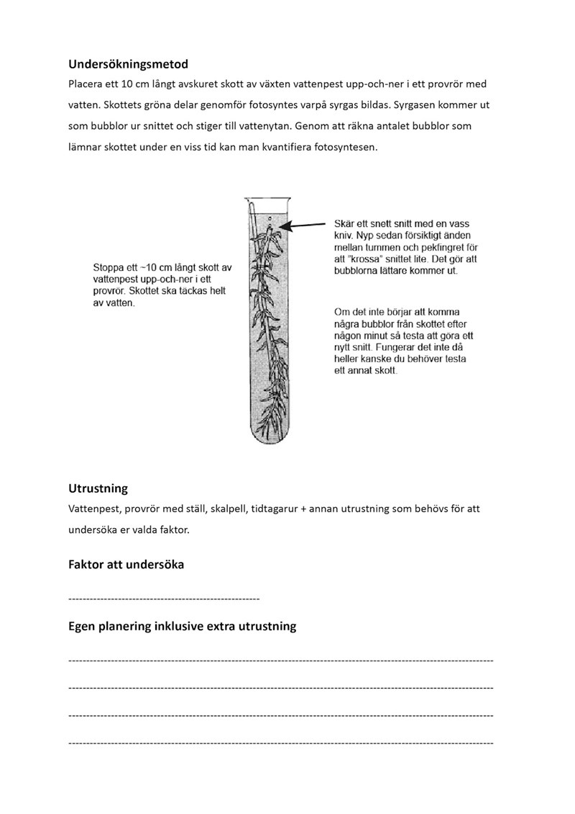

VattenTestaren
Manual
Hur man använder provrör och pH-test för att testa vattenkvaliteten
För att testa vattenkvaliteten med provrör och pH-test behöver du först fylla ett rent provrör med det vatten du vill testa. Därefter lägger du till några droppar av ett pH-testmedel i provröret enligt anvisningarna på förpackningen.
Beroende på testresultatet ändrar vattnets färg. Jämför färgen med den skala som medföljer pH-testet för att avgöra vattnets pH-nivå. Detta kan ge dig en indikation på vattenkvaliteten och om det finns några avvikelser som kräver ytterligare åtgärder.